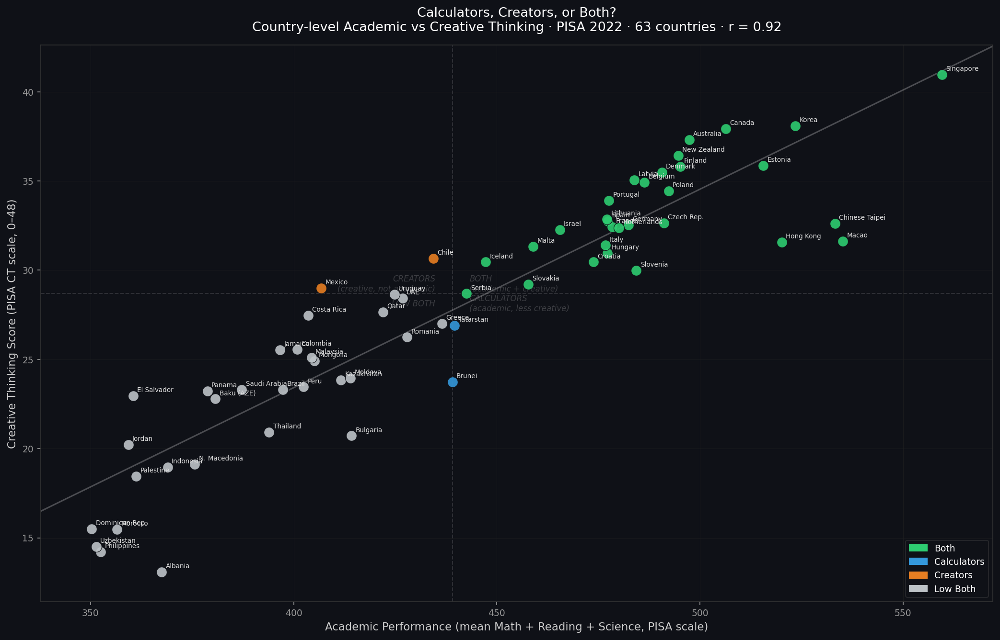
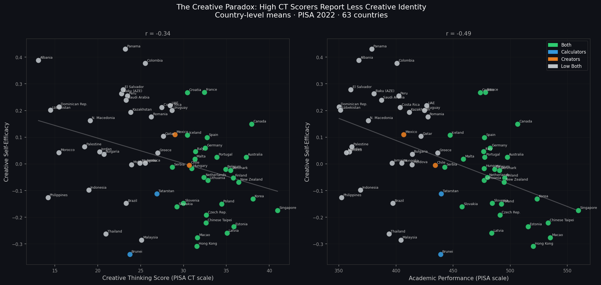
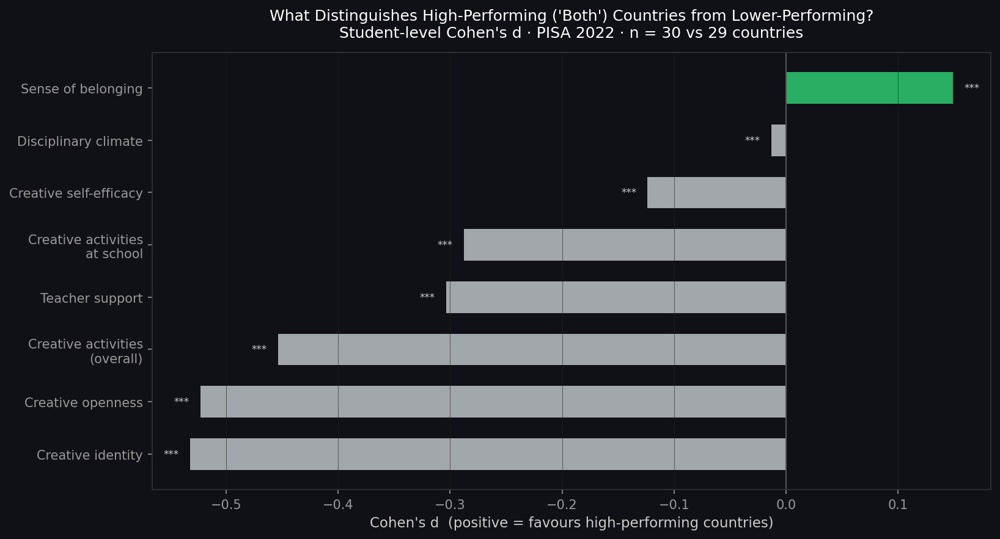
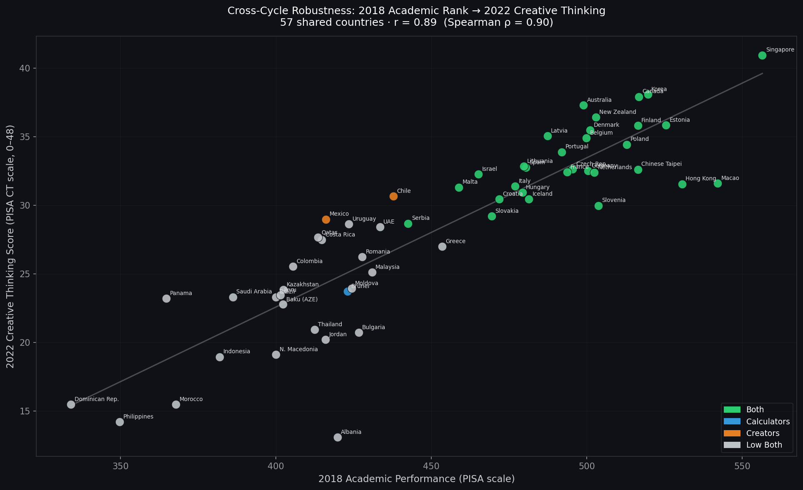

The long-held assumption: rigorous academic systems sacrifice creativity for test scores. PISA 2022 measured creative thinking directly — for the first time across 63 countries. The verdict upends the conventional wisdom. But it comes with a twist.
Across all 63 countries that participated in PISA 2022's Creative Thinking domain, academic performance and creative thinking are almost perfectly correlated. Countries that score well on Math, Reading, and Science also score well on creative thinking. Countries that struggle academically also struggle creatively. The middle of the 2×2 map is nearly empty.

The scatter is a near-perfect line. Whether you look at Singapore at the top, Albania at the bottom, or Estonia in the middle — countries land almost exactly where their academic rank would predict. There is no cluster of "academic but not creative" countries, and no cluster of "creative but not academic" ones.
Splitting countries at the median academic score (439 PISA points) and median creative thinking score (28.7 CT points) produces four quadrants. The off-diagonal cells are nearly empty.
Only two countries score above the academic median while falling below the creative thinking median — Tatarstan (a Russian regional sample) and Brunei, both near the exact boundary. Only Chile and Mexico show the reverse: creative thinking above the median, academics below. In both cases, the gap is small and the countries sit just off the diagonal. The archetypes barely exist in the data.
The most commonly cited examples of "calculators" — Singapore, South Korea, Hong Kong, Macao, Chinese Taipei — are all firmly in the "Both" quadrant. Singapore leads the world outright in creative thinking (CT score: 41.0), followed by Korea (38.1), Canada (37.9), and Australia (37.3). The argument that Confucian-influenced education systems trade creativity for academic scores is not supported by PISA 2022.
| Country | Academic | CT Score | Quadrant |
|---|---|---|---|
| Singapore | 559.6 | 41.0 | Both |
| Korea | 523.5 | 38.1 | Both |
| Hong Kong | 520.2 | 31.6 | Both |
| Chinese Taipei | 533.2 | 32.6 | Both |
| Macao | 535.1 | 31.6 | Both |
| Estonia | 515.6 | 35.9 | Both |
| Finland | 495.1 | 35.8 | Both |
| Chile | 434.4 | 30.7 | Creator |
| Brunei | 439.1 | 23.7 | Calculator |
PISA 2022 also asked students about their creative identity, openness, and activities — both inside and outside school. These self-report measures reveal a striking reversal: students in the highest-performing countries consistently rate themselves as less creative than students in the lowest-performing countries.

Panama, Albania, and Colombia lead the world in students' self-reported creative confidence — and score near the bottom of the actual creative thinking assessment. Singapore, Hong Kong, Latvia, Estonia, and New Zealand cluster in the opposite corner: world-class CT scores, well below-average creative self-belief.

Compared to students in lower-performing countries, students in high-performing countries report substantially less creative identity (d = −0.53), creative openness (d = −0.52), and overall creative activity (d = −0.45). The one variable that runs in the opposite direction is sense of belonging (d = +0.15) — students in high-performing systems feel more connected to their school, even if they feel less exceptional as creative individuals.
The most plausible explanation is social calibration. In a country where creative achievement is widespread and visible — where your classmates produce exceptional work and your teachers set high creative standards — you are naturally less likely to see yourself as unusually creative. The reference group sets the bar. A student in Finland surrounded by accomplished peers may feel less exceptional than a student in a lower-performing context with fewer visible reference points.
This is not a uniquely creative-thinking phenomenon. The same pattern appears in maths: students in high-performing countries often report lower maths self-concept than students in countries where the absolute performance level is lower, despite objectively knowing more mathematics. PISA researchers call this the Big-Fish-Little-Pond Effect.
The practical implication: self-reported creative confidence is not a good proxy for creative thinking capacity. The countries investing most in creative skill development are, if anything, making their students more aware of how much further there is to go.
A natural objection: both academic and creative thinking scores could simply reflect national income. Richer countries fund better schools, and better schools produce better outcomes on every dimension. If ESCS explains everything, the CT–academic correlation contains no independent educational signal.
ESCS predicts both academic and CT scores equally well (r ≈ 0.76–0.77). But after controlling for national socioeconomic status, the correlation between academic and creative thinking performance is still r = 0.82 — nearly as strong as the raw relationship. The alignment between academic excellence and creative thinking is not a wealth effect dressed up as an educational one. Something about how education systems develop students — the depth of instruction, the quality of feedback, the expectation that students reason through hard problems — appears to develop both dimensions together.
Creative Thinking PVs: PV1CRTH_NC–PV10CRTH_NC
from PISA 2022 CRT file (CY08MSP_CRT_COG.SAV). The Creative Thinking
domain used its own PISA scale (approximate range 0–48+, OECD mean ~33).
63 countries opted into this optional domain; 499,843 students have valid scores.
Academic PVs + weights: Math, Reading, and Science PVs (10 each)
plus W_FSTUWT and ESCS from the PISA 2022 student
questionnaire file. Joined to the CT file on CNTSTUID. No students
were missing weights after the join.
Context variables: Creative identity (CREATOR), creative openness (CREATOPN), creative activities overall (CREATACT) and at school (CREATSCH), creative self-efficacy (CREATEFF), teacher support (TEACHSUP), sense of belonging (BELONG), and disciplinary climate (DISCLIM) — all from the student questionnaire.
Academic performance = mean of 10 PVs across Math, Reading, and Science per student.
CT score = mean of 10 CT PVs per student. Country means are weighted by
W_FSTUWT. Quadrant boundaries: median academic (439.1) and median CT
(28.7) over the 63-country distribution.
Student-level Cohen's d between students in "Both" (30 countries) and "Low Both" (29 countries) on each context variable. Significance via Welch's t-test. Partial correlation controls for country-level ESCS via OLS residuals (62 countries with valid ESCS; Costa Rica missing).
The CT and academic scales are not directly comparable in absolute terms (different IRT scalings). Japan and the United Kingdom did not participate in the CT domain and are absent from all analyses. The "Both vs Low Both" comparison confounds country income, cultural context, and educational policy — no individual variable should be interpreted causally.
Because this story uses PISA 2022 data, replication against an independent cycle means running it in reverse: do 2018 academic rankings predict 2022 creative thinking scores? Three checks were conducted.

The cross-cycle check is the most demanding: a country's 2018 academic rank (measured four years before the CT assessment existed) predicts its 2022 CT score with r = 0.89. The causal arrow cannot run backwards — CT scores in 2022 cannot have caused academic rankings in 2018. Whatever drives the alignment is a stable property of education systems, not a 2022 artefact.
Country positions are almost entirely stable. Every country in the "Both" quadrant (green) was already a high academic performer in 2018. Every country in the "Low Both" cluster (grey) was already lower-performing in 2018. The rank ordering of countries across these two completely independent measurements is nearly identical.
Restricting the sample to the 28 OECD members in the CT dataset, the correlation is r = 0.878 — essentially unchanged, and comparable to the full-sample result. Using only Math performance (rather than the composite of Math, Reading, and Science), the correlation with CT is r = 0.866. The finding does not depend on composite construction.
Cross-cycle: 2018 academic means computed from
SPSS_STU_QQQ.zip (2018 student questionnaire, 80 countries).
Joined with 2022 CT means on country code. 57 countries present in both datasets.
Pearson r and Spearman ρ reported.
OECD-only: 28 of the 63 CT-participating countries are OECD members. CT–academic Pearson r computed within this subset.
Math-only: 2022 Math PVs only (not the composite academic score) compared with CT across all 63 countries.
Verdict: The academic–creative thinking alignment is confirmed across all three independent checks. The cross-cycle result (r = 0.89) is particularly strong evidence that the finding reflects stable educational system characteristics rather than a single-cycle measurement artefact.